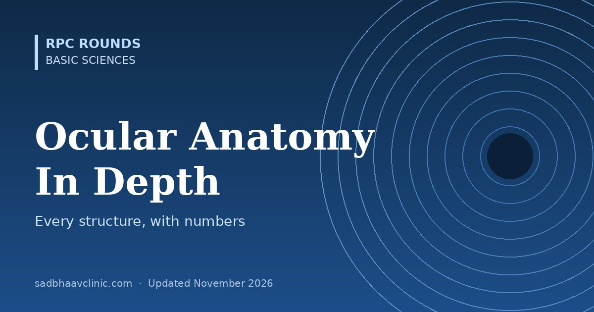
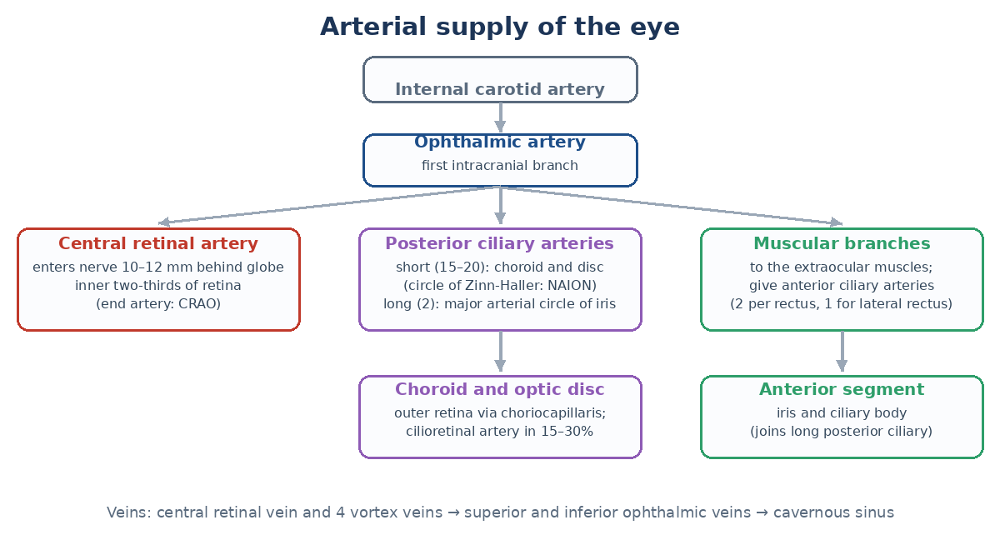

Last updated: November 2026
Clinical ophthalmology is applied anatomy: the angle explains glaucoma, the blood supply explains vascular occlusions, and the layers of the retina explain every OCT. This guide goes structure by structure, with the measurements and relations that examiners ask and surgeons use.
| Measurement | Typical adult value |
|---|---|
| Axial length | About 23.5–24 mm (16–17 mm at birth) |
| Volume | About 6.5–7 mL |
| Coats | Outer fibrous (cornea, sclera), middle vascular (uvea), inner neural (retina) |
| Chambers | Anterior chamber about 0.25 mL, depth about 3 mm centrally; posterior chamber about 0.06 mL; vitreous cavity about 4 mL |
| Feature | Value or fact |
|---|---|
| Diameter | About 11.5–12 mm horizontally, 10.5–11 mm vertically (horizontally oval from the front) |
| Thickness | About 540 µm centrally, 650–700 µm peripherally |
| Radius of curvature | Anterior about 7.8 mm, posterior about 6.5 mm |
| Power | About +43 D in total (anterior surface about +49 D, posterior about −6 D): two-thirds of the eye's focusing power |
| Nerve supply | Long ciliary nerves from the nasociliary branch of V1; the densest sensory innervation in the body |
| Layer | Key facts |
|---|---|
| Epithelium | Non-keratinised stratified squamous, 5–7 cell layers, about 50 µm; renews in about 7 days from limbal stem cells |
| Bowman layer | Acellular condensed collagen, 8–12 µm; does not regenerate (scars after injury) |
| Stroma | About 90% of thickness; 200–250 lamellae of regularly spaced type I collagen with keratocytes |
| Pre-Descemet (Dua) layer | A thin, tough acellular layer (about 10–15 µm) described in 2013; relevant to big-bubble DALK |
| Descemet membrane | Basement membrane of the endothelium; thickens with age (about 3 µm at birth to 10 µm or more); site of guttae in Fuchs dystrophy |
| Endothelium | Single layer of hexagonal cells; about 2,500–3,000 cells/mm² in young adults, falling with age; does not divide in humans |
| Structure (from front to back on gonioscopy) | Notes |
|---|---|
| Schwalbe line | The end of Descemet membrane: a fine white line, sometimes pigmented (Sampaolesi line in pseudoexfoliation) |
| Trabecular meshwork | Uveal (innermost), corneoscleral, and juxtacanalicular meshwork (the main site of outflow resistance); the pigmented part overlies Schlemm canal |
| Scleral spur | A white band; the attachment of the longitudinal ciliary muscle |
| Ciliary body band | Grey-brown; wide in myopes and after angle recession |
| Iris root | Insertion of the iris into the ciliary body |
Aqueous leaves through Schlemm canal, collector channels and aqueous veins into the episcleral veins (conventional route), or through the ciliary muscle into the suprachoroidal space (uveoscleral route).
| Part | Key anatomy |
|---|---|
| Iris | Anterior border layer, stroma, sphincter pupillae (parasympathetic, CN III via the ciliary ganglion and short ciliary nerves), dilator pupillae (sympathetic, via long ciliary nerves), and a two-layered posterior pigment epithelium |
| Ciliary body | About 6 mm wide: pars plicata (anterior 2 mm, about 70 ciliary processes that make aqueous) and pars plana (posterior 4 mm, the safe entry zone for vitrectomy and injections). Ciliary muscle has longitudinal, radial and circular fibres |
| Choroid | Haller layer (large vessels), Sattler layer (medium), choriocapillaris (fenestrated, the highest blood flow per gram of any tissue); thickest at the posterior pole |
| Bruch membrane | Five layers: RPE basement membrane, inner collagenous, elastic, outer collagenous, choriocapillaris basement membrane; deposits here underlie drusen and AMD |
| Layer (inner to outer) | Contains or corresponds to |
|---|---|
| Internal limiting membrane | Basement membrane of Müller cells; peeled in macular hole surgery |
| Nerve fibre layer | Ganglion cell axons; flame haemorrhages, cotton wool spots |
| Ganglion cell layer | Ganglion cell bodies; thickest around the fovea |
| Inner plexiform layer | Synapses of bipolar, amacrine and ganglion cells |
| Inner nuclear layer | Bipolar, horizontal, amacrine and Müller cell nuclei; dot-blot haemorrhages, cysts |
| Outer plexiform layer | Photoreceptor-bipolar synapses; Henle fibre layer at the fovea (macular star, hard exudates) |
| Outer nuclear layer | Photoreceptor nuclei |
| External limiting membrane | Junctions between Müller cells and photoreceptors |
| Photoreceptor layer | Inner and outer segments; the ellipsoid zone on OCT |
| Retinal pigment epithelium | Single layer of hexagonal cells resting on Bruch membrane |
| Segment | Length |
|---|---|
| Intraocular (disc) | About 1 mm |
| Intraorbital | 25–30 mm (slack, allowing eye movement) |
| Intracanalicular | 6–10 mm (vulnerable in trauma) |
| Intracranial | About 10 mm, to the chiasm |

| Nerve or ganglion | Role |
|---|---|
| Ciliary ganglion | In the orbit lateral to the optic nerve; the parasympathetic root (from the CN III inferior division, via the nerve to inferior oblique) synapses here; sensory and sympathetic fibres pass through without synapsing |
| Short ciliary nerves | Carry parasympathetic fibres to the sphincter and ciliary muscle, plus sensory and sympathetic fibres |
| Long ciliary nerves | Sensory to the cornea; sympathetic to the dilator pupillae |
| CN III, IV, VI | Oculomotor (all recti except lateral, inferior oblique, levator, pupil), trochlear (superior oblique), abducens (lateral rectus) |
| CN VII | Orbicularis oculi (closure) and reflex tear secretion via the pterygopalatine ganglion |
| Sympathetic chain | Three-neuron pathway (hypothalamus, ciliospinal centre of Budge at C8–T2, superior cervical ganglion) to the dilator and Müller muscle: interrupted in Horner syndrome |
For the orbit, see orbital anatomy made easy; for development, embryology made easy; for histological layers, layers of the eye.
Where residents slip
Related: Orbital Anatomy Made Easy: Walls, Fissures and Muscles, Layers in Ophthalmology: Cornea to LGN in Tables, Ocular Physiology Basics: Tear Film, Aqueous, Cornea, Lens and Retina, Revise ophthalmology checklist.
📘 Want more exam-ready material? See Most Commons in Ophthalmology on Kindle, or browse all my books.
Looking for an eye specialist in Ahmedabad? Learn about our Eye Department or book a consultation with Dr. Dhaval Patel.